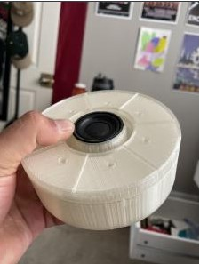

Final Project
Summary
At the start of this project when we made our group, while brainstorming what to do for this project we ultimately came to a focus point of wanting something to do with sound. This came from some inspiration from the previous years' projects that had to do with sound. While our final product is much different from the original sketches we ended up making a musical box/cylinder. The final product is a musical box with seven buttons to play the notes on a C major scale. The box is small so it is portable and easy to play around with.
The Beginning
These are the initial sketches that we came up with. While brainstorming we really like the idea of a traditional music box that you crank and then play music. We then off that wanted strings that a person could possibly play along with the music. We soon realized that this was a little too ambitious for us non of us really knew how we would get something like that going electronically. This eventually led us to look at drum kits and not at strings.
Enclosure
Fusion 360 Model
When moving on to the enclosure we wanted something handheld this was mainly done by my partner Rishi. He also got parts for the enclosure to make sure they’d fit. It was designed in Fusion 360 and then 3D printed.
Trouble With Parts

While I didn’t really do much with the parts, Rishi and Soland worked on that. From what I saw they had some trouble with it. Since we wanted a small enclosure parts were small and some were so small that they didn’t work.
Internals & Code
Github
Playtesting

I worked on testing the first part of the internal components. This part wasn’t too bad as much of it was wiring buttons and making sure that the code correlated correctly. I ran into issues with some lighting but having serial.print was a useful tool in getting the lighting to look better.
Future Direction & Failed Plans
Early in we were able to reach the goal of having some musical box that played notes and had correlating lights changing. This was simple so we wanted to do more with it. The plan was to add some nice LED effects as well as adding a Simon says type of game to it. These ultimately failed due to a lack of time as well as trouble in coding it. Since I was doing most of the coding the issue I ran into for the LED was just a lack of time. I believe the syntax for it would be pixels.setPixelColor(LED#, pixels.color()). Not enough time with the enclosure set up to do anything special with the individually controlled LEDs. The Simon Says game was a coding challenge and I couldn’t figure it out. While there were examples out there many used the single LEDs instead of the LED strip that we were using. In many of the example codes, they would use the HIGH state of the LED to compare with the correct pattern of the Simon Says game. Since we didn’t have the regular single LED in use we couldn’t code it this way. I think the way I should have tried to code it was with a premade array of the correct order of buttons. In the end, I couldn’t really figure it out.
Final Notes
Final Product Video
Although it was disappointing not being able to finish the coding part I think I’m overall satisfied with the final product.